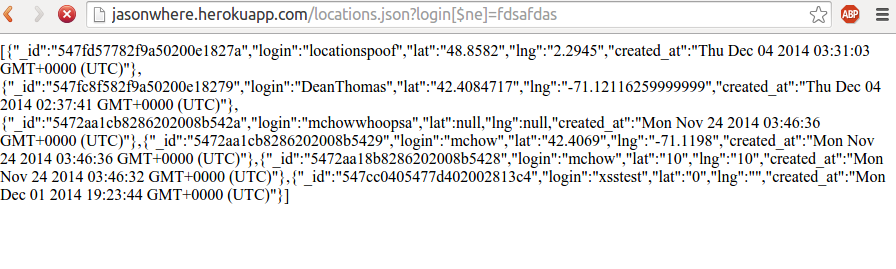

By Jay DeStories
This is an assessment of the security of the web application developed by Jason Brillon located at jasonwhere.herokuapp.com for assignment 3 of Comp 20, as well as Jason Brillon's Assignment 2, a client which utilizes this web appication. The web application allows clients to check in their location and handle, retrieve a list of recent check-ins by user or by any user, and retrieve a copy of the live information located at http://developer.mbta.com/lib/rthr/red.json. A security vulnerability will be defined as any use of the web application in a way that violates its intended use, or causes its behavior to differ from its intended behavior.
I first attacked the web application without looking at any of the source code. I looked for common vulnerabilities and then, once I had exhausted my ideas, I looked at the source code to determine how to resolve those vulnerabilities.
curl, chromium web browser, chrome developer tools, firefox web browser, shell scripts
The vulnerabilities detailed in this assessment are the result of being too lenient with input from the client-- assignment 2 or any other application operating on the provided APIs. Text that is sent to the server is not filtered, and maliciously designed text can cause unintended behavior in the applications.
The assignment 3 web application allows for a login/lng/lat to be posted to /sendLocation. Javascript can be posted as one of these fields and later executed when send to a client.
Severe Vulnerability: Arbitrary javascript can be executed on other people's browsers when they access the root html page or the locations.json page. This could mean a minor annoyance such as an alert window, or something more sever like redirecting them to a site containing malware or a phishing site.
The values for login, lat, and lng posted to /sendLocations of the assignment 3 web application are not parsed before saving them in the mongo database, and are also not parsed before sent back to the user from the database. Therefore, any html can be placed within one of these fields, including any javascript, and it will be sent back to any client which requests those fields either by accessing the root html page or the locations.json page.
For example, a script generating an alert window can be placed within login, lat, or lng in a post. In this example, lng was set to
To prevent injection of html tags like
var validator = require('validator');
...
var login = validator.sanitize(request.body.login).xss()
var lat = validator.sanitize(request.body.lat).xss()
var lng = validator.sanitize(request.body.lng).xss()
This vulnerability is within the assignment 3 web application, but it manifests itself most in the assignment 2 client.
Moderate: Locations can be faked, which can mislead clients of the API, including the assignment 2 client. Although the vulnerability itself is not disasterous, it is difficult to resolve, because the system relies on the client to self-report location.
The client self-reports location. If the assignment 2 client is used and is not tampered with, geolocation should get appropriate location values. However, if that data is tampered with or the data is posted from some other client or a tool like curl, that location can be modified to any arbitrary lat/lng. This means that anyone can report that they are at any location. This leads to other clients retrieving this information and falsely thinking that the malicious client is at that location. This reduces the utility of the application because it is less reliable.
In this example, I posted the coordinates of the Eifel Tower to /sendLocation, despite being in Medford, using curl.
This is a more difficult problem to resolve. One solution is to use a service to lookup an approximate location by IP, then verify that the user-reported location is nearby the location by IP before accepting it.
This vulnerability is limited to the assignment 3 web application.
Low: The locations.json API can be used to get more information than is intended in a single query, but not information that could not otherwise be gotten through multiple requests. This is potentially dangerous as a way of more easily maliciously consuming server resources (DDOS).
The locations.json API takes in a login argument and returns the 100 most recent check-ins from that login. The argument can be modified to cause the API to return check-ins from more than one user at once. This could mean easily hitting the 100 check-in cap by performing a not equal query and getting check-ins out of the pool of all, or nearly all users. Doing so would be an easy way to make an expensive request to the surver. If the server was flooded with many such requests, it could slow it down for other users, potentially making the service unusable.
In this example, I query login not equal to a garbage value. By doing so, I get back the json from check-ins from all logins.
This vulnerability is in the assignment 3 web application, but a denial of service of assignment 3 will cause assignment 2 to fail because it depends on assignment 3.
Moderate: The service can be shut down by a malicious client, but other clients are only affected in that they cannot use the service.
By sending a large amount of data to the /sendLocation API, it will be saved in the heroku MongoDB database. Since there is a limit to the amount of data that can be stored in the database at each heroku subscription tier, eventually the limit will be hit and it will not be possible to add new records. This means that other users who try to use the /sendLocation API will not be able to enter their locations into the database.